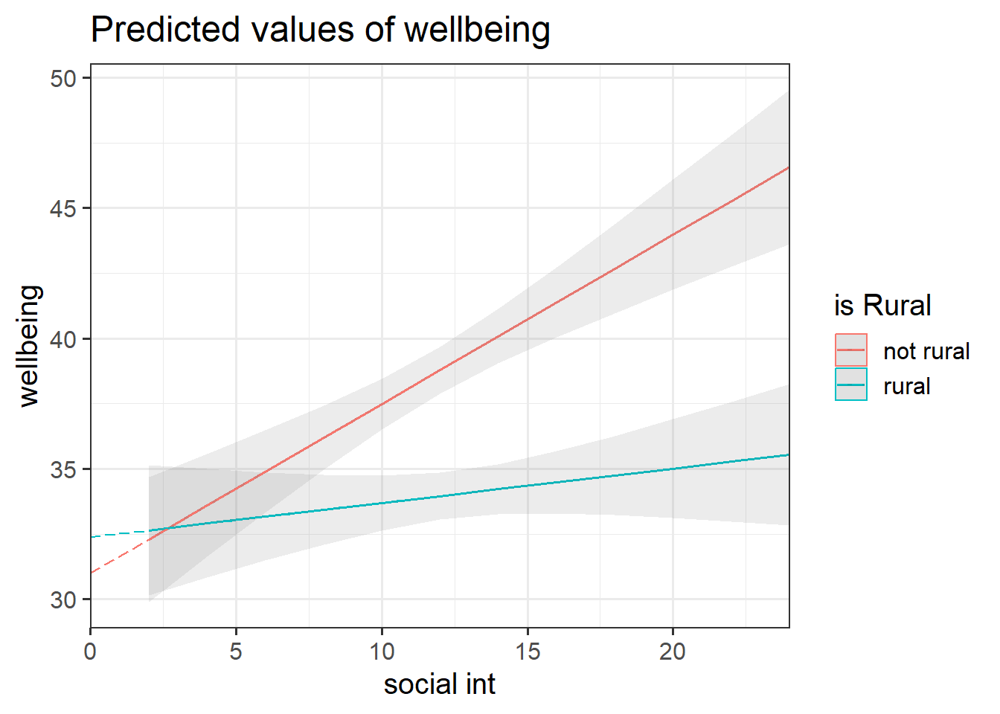
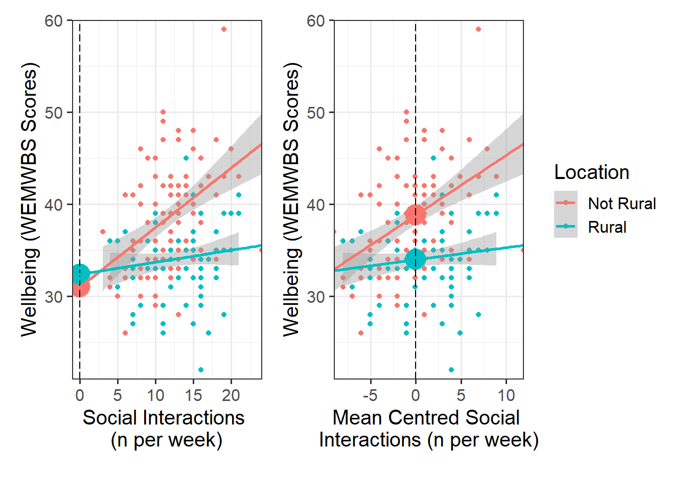

| variable | description |
|---|---|
| age | Age in years of respondent |
| outdoor_time | Self report estimated number of hours per week spent outdoors |
| social_int | Self report estimated number of social interactions per week (both online and in-person) |
| routine | Binary 1=Yes/0=No response to the question 'Do you follow a daily routine throughout the week?' |
| wellbeing | Warwick-Edinburgh Mental Wellbeing Scale (WEMWBS), a self-report measure of mental health and well-being. The scale is scored by summing responses to each item, with items answered on a 1 to 5 Likert scale. The minimum scale score is 14 and the maximum is 70 |
| isRural | Location of primary residence (Rural, Not Rural) |
Interactions I: Num x Cat
Learning Objectives
At the end of this lab, you will:
- Understand the concept of an interaction
- Be able to interpret the meaning of a numeric \(\times\) categorical interaction
- Be able to visualize and probe interactions
What You Need
- Be up to date with lectures
- Have completed all labs from Semester 1
Required R Packages
Remember to load all packages within a code chunk at the start of your RMarkdown file using library(). If you do not have a package and need to install, do so within the console using install.packages(" "). For further guidance on installing/updating packages, see Section C here.
For this lab, you will need to load the following package(s):
- tidyverse
- kableExtra
- psych
- sjPlot
- patchwork
- sandwich
- interactions
Presenting Results
All results should be presented following APA guidelines.If you need a reminder on how to hide code, format tables/plots, etc., make sure to review the rmd bootcamp.
The example write-up sections included as part of the solutions are not perfect - they instead should give you a good example of what information you should include and how to structure this. Note that you must not copy any of the write-ups included below for future reports - if you do, you will be committing plagiarism, and this type of academic misconduct is taken very seriously by the University. You can find out more here.
Lab Data
You can download the data required for this lab here or read it in via this link https://uoepsy.github.io/data/wellbeing_location_rural.csv
Study Overview
Research Question
Does the association between wellbeing and the number of social interactions differ between rural and non-rural residents?
Setup
Setup
- Create a new RMarkdown file
- Load the required package(s)
- Read the wellbeing_location_rural dataset into R, assigning it to an object named
ruraldata
Exercises
Study & Analysis Plan Overview
Question 1
Provide a brief overview of the study design and data, before detailing your analysis plan to address the research question.
Hint
- Give the reader some background on the context of the study
- State what type of analysis you will conduct in order to address the research question
- Specify the model to be fitted to address the research question (note that you will need to specify the reference level of your categorical variable)
- Specify your chosen significance (\(\alpha\)) level
- State your hypotheses
Much of the information required can be found in the Study Overview codebook.
The statistical models flashcards may also be useful to refer to. Specifically the interaction models flashcards and numeric x categorical example flashcards might be of most use.
Question 2
Check coding of variables (e.g., that categorical variables are coded as factors).
As specified in Q1, we want ‘not rural’ as the reference group, so make sure to specify this.
Hint
Review the specifying reference levels flashcard.
Descriptive Statistics & Visualisations
Question 3
Provide a table of descriptive statistics and visualise your data.
Remember to interpret your findings in the context of the study (i.e., comment on any observed differences among groups).
In particular:
- Explore the associations among the variables included in your analysis
- Produce a visualisation of the association between weekly number of social interactions and well-being, with separate facets for rural vs non-rural respondents OR with different colours for each level of the
isRuralvariable.
Hint
Review the many ways to numerically and visually explore your data by reading over the data exploration flashcards.
For examples, see flashcards on descriptives statistics tables - categorical and numeric values examples and numeric x categorical example - visualise data, paying particular attention to the type of data that you’re working with.
More specifically:
1. For your table of descriptive statistics, both the group_by() and summarise() functions will come in handy here.
If you use the
select()function and get an error along the lines ofError in select...unused arguments..., you will need to specifydplyr::select()(this just tellsRwhich package to use the select function from).The
pairs.panels()function from the psych package can plot all variables in a dataset against one another. This will save you the time you would have spent creating individual plots, but is only useful for continuous variables.
Model Fitting & Interpretation
Question 4
Fit the specified model, and assign it the name “rural_mod”.
Hint
We can fit interaction models using the lm() function.
For an overview, see the interaction models flashcards.
For an example, review the interaction models > numeric x categorical example > model building flashcards.
Question 5
Look at the parameter estimates from your model, and write a description of what each one corresponds to on the plot shown in Figure 1 (it may help to sketch out the plot yourself and annotate it, and refer to the drop down options below).

Hint
Recall that we can obtain our parameter estimates using various functions such as summary(),coef(), coefficients(), etc.
For an overview of how to interpret coefficients, review the interaction models > interpreting coefficients flashcard.
For a specific example of coefficient interpretation, review the interaction models > numeric x categorical example > results interpretation flashcards.
Question 6
No participants in our dataset had zero hours of social interactions per week (the lowest was 3), and we’re likely not interested in differences between rural and non-rural residents who have never interacted with others.
Mean center the continuous IV(s), and re-run your model with mean centered variable(s).
Hint
There are a couple of different ways that we can re-centre. See the data transformations > centering flashcards for a recap. Note, it would be best to create a new mean-centered variable to then use within the model in this instance.
Question 7
Note any differences between the summary() output between the original (“rural_mod”) and mean centred (“rural_mod1”) models. Pay particular attention to your coefficients and their significance values. How have your coefficients changed? Why do you think these differences have been observed?
Hint
These plots illustrate the difference between the “rural_mod” and “rural_mod1” models.

Note that the lines without SE intervals on the left plot represent predicted values below the minimum observed number of social interactions, to ensure that zero on the x-axis is visible

Visualise Interaction Model
Question 8
Using the probe_interaction() function from the interactions package, visualise the interaction effects from your model.
Try to summarise the interaction effects in a short and concise sentence.
Hint
For an overview and example, review the interaction models > numeric x categorical example > model visualisation flashcards.
Writing Up & Presenting Results
Question 9
Provide key model results in a formatted table.
Hint
Use tab_model() from the sjPlot package. For a quick guide, review the tables flashcard.
Question 10
Interpret your results in the context of the research question and report your model in full.
Make reference to the interaction plot and regression table.
Hint
For an example of coefficient interpretation, review the interaction models > numeric x categorical example > results interpretation flashcards.
Compile Report
Compile Report
Knit your report to PDF, and check over your work. To do so, you should make sure:
- Only the output you want your reader to see is visible (e.g., do you want to hide your code?)
- Check that the tinytex package is installed
- Ensure that the ‘yaml’ (bit at the very top of your document) looks something like this:
---
title: "this is my report title"
author: "B1234506"
date: "07/09/2024"
output: bookdown::pdf_document2
---
What to do if you cannot knit to PDF
If you are having issues knitting directly to PDF, try the following:
- Knit to HTML file
- Open your HTML in a web-browser (e.g. Chrome, Firefox)
- Print to PDF (Ctrl+P, then choose to save to PDF)
- Open file to check formatting
Hiding Code and/or Output
To not show the code of an R code chunk, and only show the output, write:
```{r, echo=FALSE}
# code goes here
```To show the code of an R code chunk, but hide the output, write:
```{r, results='hide'}
# code goes here
```To hide both code and output of an R code chunk, write:
```{r, include=FALSE}
# code goes here
```
Tinytex
You must make sure you have tinytex installed in R so that you can “Knit” your Rmd document to a PDF file:
install.packages("tinytex")
tinytex::install_tinytex()